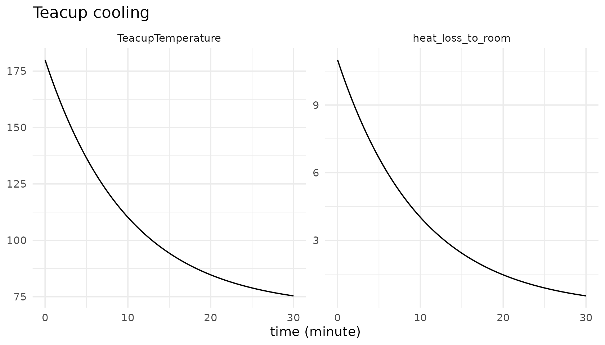
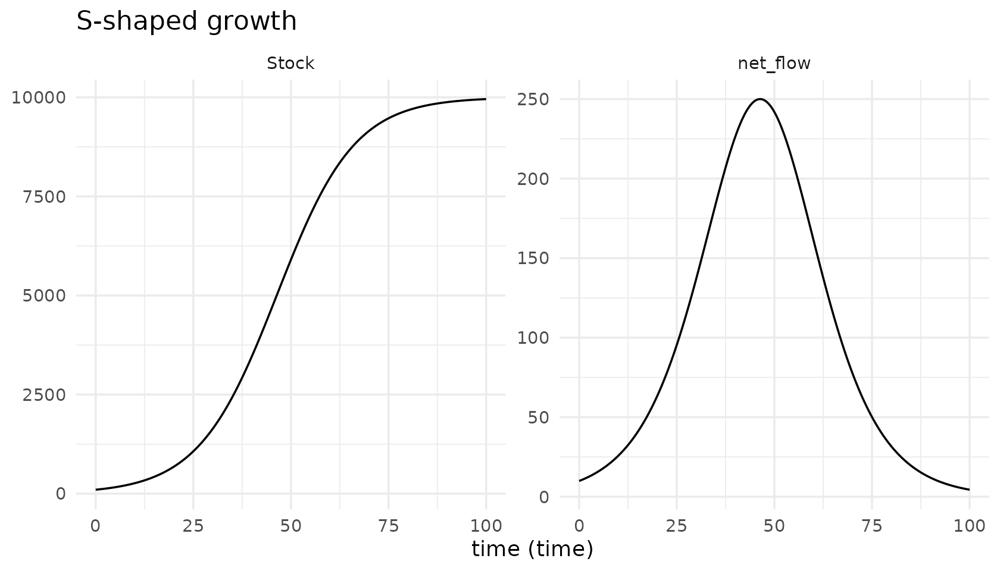

library(tidysd)
#>
#> Attaching package: 'tidysd'
#> The following object is masked from 'package:stats':
#>
#> simulateThree layers, one verb
A tidysd model is not an object you build up; it is
three plain, immutable values that only meet inside
simulate().
sd_structure() what exists, how it is wired (no math)
sd_equations() functional forms (symbolic)
sd_parameters() the numbers and dataThe split is not cosmetic. It is what lets you keep a structure and swap the functional form, or keep both and swap every number, without editing a line of the other two.
The smallest complete model
One stock, one outflow proportional to the gap between the stock and a goal: a cup of tea cooling toward room temperature.
teacup_struct <- sd_structure(
meta(name = "Teacup cooling"),
stock("TeacupTemperature", units = "degF"),
flow("heat_loss_to_room", from = "TeacupTemperature", to = .sink,
units = "degF/minute")
)
teacup_eqns <- sd_equations(
heat_loss_to_room ~ (TeacupTemperature - room_temperature) / characteristic_time
)
teacup_pars <- sd_parameters(
constant(room_temperature = 70, characteristic_time = 10),
initial(TeacupTemperature = 180)
)
out <- simulate(teacup_struct, teacup_eqns, teacup_pars,
spec = sim_spec(start = 0, stop = 30, dt = 0.125,
method = "euler", time_unit = "minute"))
out
#> # Teacup cooling
#> # A tibble: 482 × 5
#> time variable value unit type
#> <dbl> <chr> <dbl> <chr> <chr>
#> 1 0 TeacupTemperature 180 degF stock
#> 2 0.125 TeacupTemperature 179. degF stock
#> 3 0.25 TeacupTemperature 177. degF stock
#> 4 0.375 TeacupTemperature 176. degF stock
#> 5 0.5 TeacupTemperature 175. degF stock
#> 6 0.625 TeacupTemperature 173. degF stock
#> 7 0.75 TeacupTemperature 172. degF stock
#> 8 0.875 TeacupTemperature 171. degF stock
#> 9 1 TeacupTemperature 169. degF stock
#> 10 1.12 TeacupTemperature 168. degF stock
#> # ℹ 472 more rowsEvery run returns one long tibble: time,
variable, value, unit,
type, plus a column per subscript dimension and, when you
ask for them, scenario and source. That is the
whole output contract, so ggplot2 comes free.
autoplot(out)
What goes in which layer
| Item | Structure | Equations | Parameters |
|---|---|---|---|
| Stock / flow / aux / lookup / input exists; units | x | ||
Flow from / to wiring |
x | ||
| Flow-rate and auxiliary formulas | x | ||
| Choice of functional form | x | ||
Derived initial-value form
(init(S) ~ pop - I0) |
x | ||
| Constant and stock-initial values | x | ||
| Lookup point data; input series | x |
Each stock’s initial value comes from exactly one place: a number in
initial(), or a formula via init() in the
equations. Asking for both is an error, and so is asking for
neither.
Numeric literals are allowed on an equation right-hand side.
A 1 - x/K or an ifelse threshold is structure,
not a parameter.
Order does not matter
Equations resolve into a dependency graph when the model is bound, so you can write them in whatever order reads best.
struct <- sd_structure(
meta(name = "S-shaped growth"),
stock("Stock", units = "widgets", non_negative = TRUE),
aux("availability"), aux("effect"), aux("growth_rate"),
flow("net_flow", from = .source, to = "Stock", units = "widgets/time")
)
# written back to front on purpose
eqns <- sd_equations(
net_flow ~ Stock * growth_rate,
growth_rate ~ ref_growth_rate * effect,
effect ~ availability / ref_availability,
availability ~ 1 - Stock / capacity
)
pars <- sd_parameters(
constant(capacity = 10000, ref_growth_rate = 0.10),
reference(ref_availability = 1),
initial(Stock = 100)
)
out <- simulate(struct, eqns, pars,
spec = sim_spec(0, 100, 0.25, time_unit = "time",
check_units = FALSE))
autoplot(out, vars = c("Stock", "net_flow"))
A genuinely simultaneous loop is reported as one, with the cycle that caused it, rather than silently resolved.
Immutability, and variants
Layers never change in place. update() returns a new
object, which is how you write a variant.
sir <- sd_example("sir")
# frequency-dependent transmission, as shipped ...
deparse(sir$equations$eqns$lambda$rhs)
#> [1] "beta * I"
# ... swapped for density-dependent, structure and parameters untouched
dd <- update(sir$equations, lambda ~ contact_rate * infectivity * I)
deparse(dd$eqns$lambda$rhs)
#> [1] "contact_rate * infectivity * I"
# and the original is exactly as it was
deparse(sir$equations$eqns$lambda$rhs)
#> [1] "beta * I"The same applies to parameters:
Checking a model without running it
sd_validate() does exactly the binding and validation
that simulate() does, and hands back the bound model.
bound <- sd_validate(sir$structure, sir$equations, sir$parameters, sir$spec)
bound
#> <sd_bound> SIR
#> stocks S, I, R
#> eval order beta, lambda, IR, RRUnits
Units are declared in the structure layer and nowhere else. Constants carry none, so the only check the grammar can honestly make is the structural one: a flow’s units must be the units of the stock it moves, per unit of simulation time. Everything unspecified is simply not checked.
bad <- sd_structure(
stock("Population", units = "people"),
flow("births", from = .source, to = "Population", units = "people") # missing /year
)
tryCatch(tidysd:::check_flow_units(bad, "year"), warning = conditionMessage)
#> [1] "Unit mismatch: flow 'births' is declared 'people'.\n\033[31m✖\033[39m Stock 'Population' is 'people', so the flow should be 'people/year' (per year)."Where to go next
-
vignette("builtins")– delays, smoothing, and shaping functions. -
vignette("subscripts")– arrayed models over named dimensions. -
vignette("data")– exogenous drivers, observed series andcalibrate(). -
vignette("catalogue")– all twenty-two worked models.